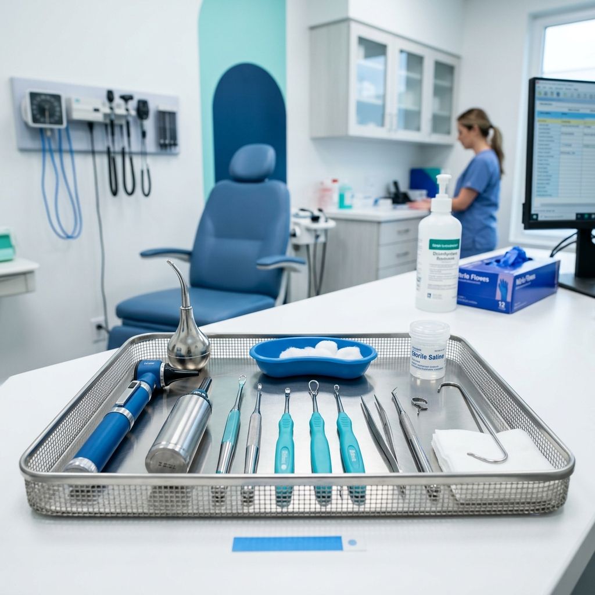

Lavado de Oídos Profesional en Viña del Mar
Atención profesional por fonoaudiólogos para el cuidado de tu salud auditiva.
¿En qué consiste el servicio?
El lavado de oídos es un procedimiento profesional que se realiza para atender la acumulación de cerumen en el canal auditivo. En BeopenSound, este servicio es realizado por fonoaudiólogos con formación y equipamiento adecuado, utilizando técnicas de irrigación controlada.
Es importante destacar que cada caso es evaluado individualmente. El profesional determina si el lavado de oídos es el procedimiento más apropiado según la condición de cada paciente.

¿Cuándo es recomendable consultar?
Es aconsejable solicitar una evaluación si experimentas alguna de las siguientes situaciones:
- Sensación de oído tapado o presión
- Disminución temporal de la audición
- Molestias o incomodidad persistente en el oído
- Uso frecuente de tapones, audífonos in-ear o dispositivos en el canal auditivo
Te recomendamos consultar siempre con un profesional antes de intentar cualquier procedimiento por cuenta propia.
¿Cómo solicitar una atención?
Puedes agendar tu hora de forma rápida y directa a través de nuestro WhatsApp. El equipo de BeopenSound te confirmará la disponibilidad y te orientará sobre cómo prepararte para tu visita.
- WhatsApp: +56 9 7137 2348
- Email: contacto.beopensound@gmail.com
- Ubicación: Arlegui 160, Edificio Lautaro Oficina 101, Viña del Mar
Precio y qué incluye
Preguntas frecuentes sobre lavado de oídos
¿En qué consiste el lavado de oídos?
Es un procedimiento profesional en el que se utiliza irrigación controlada para atender la acumulación de cerumen en el canal auditivo. Es realizado por un fonoaudiólogo con equipamiento adecuado.
¿El lavado de oídos duele?
En general, el procedimiento no debería generar dolor significativo. Puede sentirse una leve presión o incomodidad momentánea. El fonoaudiólogo adapta la técnica según cada caso.
¿Cuándo debería consultar por un lavado de oídos?
Es recomendable consultar si sientes sensación de oído tapado, disminución de la audición, presión en el oído o molestias persistentes. Un profesional evaluará si el lavado es la opción adecuada.
¿Cuánto cuesta un lavado de oídos?
El valor es $25.000 e incluye la consulta con fonoaudiólogo, la evaluación de tu caso, la otoscopia y el procedimiento completo en ambos oídos, sin costos adicionales. Si tras la evaluación el lavado no corresponde, se cobra solo la consulta ($15.000).
¿Dónde puedo realizarme un lavado de oídos en Viña del Mar?
En BeopenSound, ubicado en Arlegui 160, Edificio Lautaro Oficina 101, Viña del Mar. Puedes agendar tu atención por WhatsApp al +56 9 7137 2348.
¿Necesitas atención?
Agenda tu hora con nuestro equipo profesional en Viña del Mar.
Solicitar atención